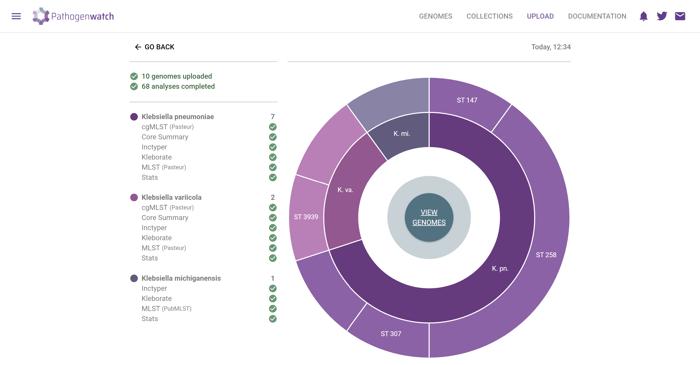
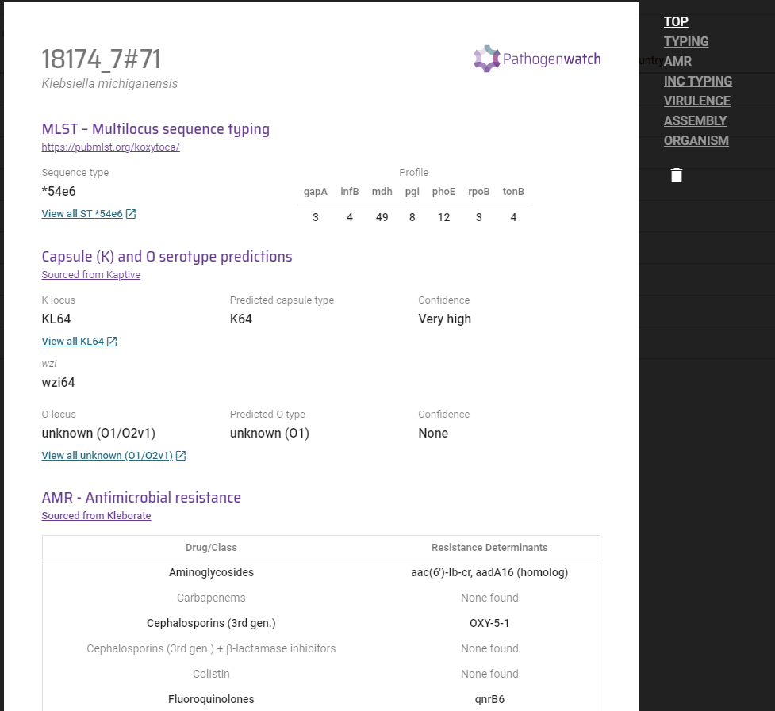
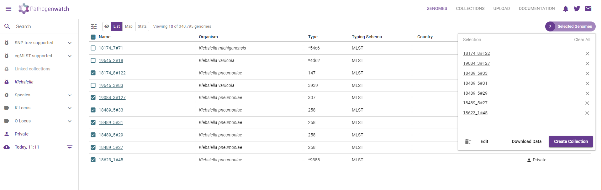
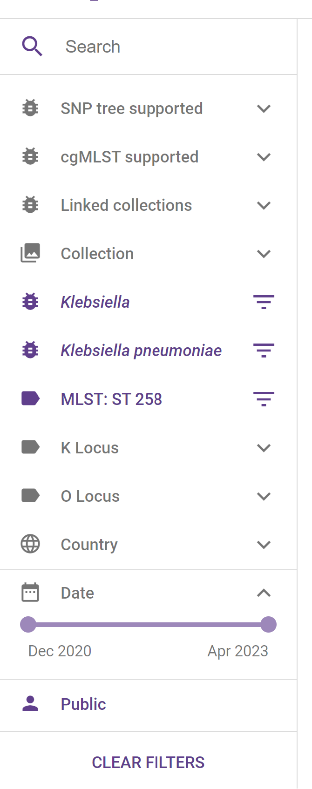
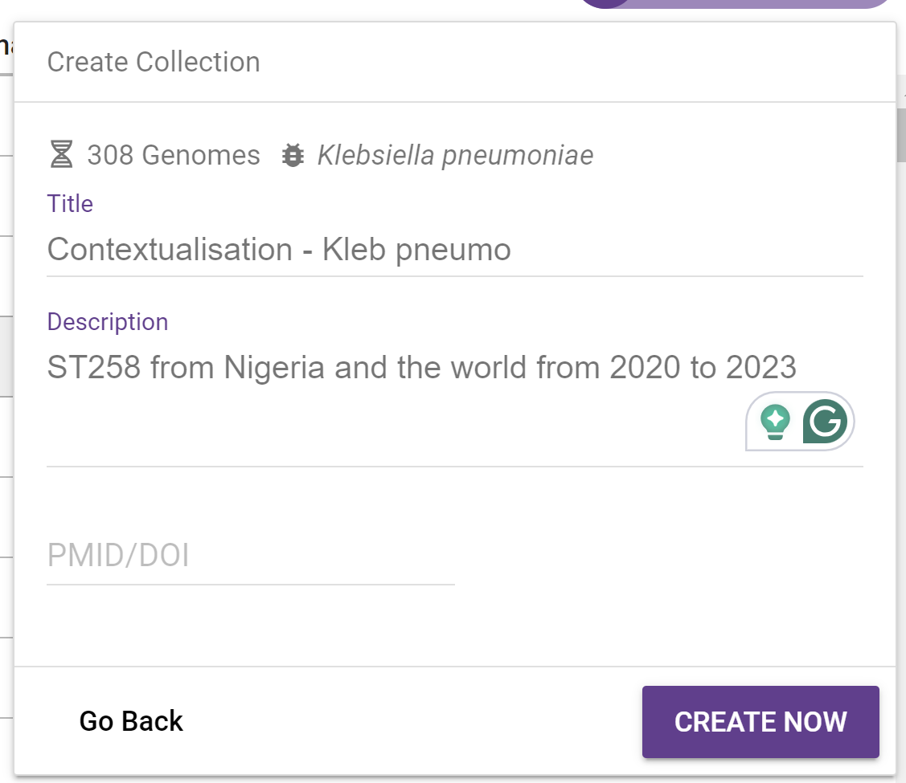
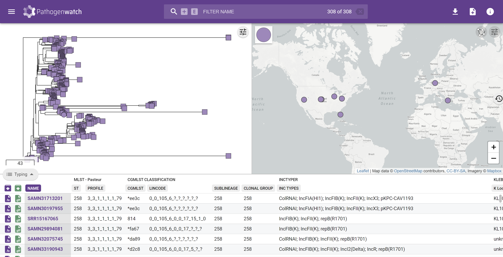

SESSION 4 - Genome Analysis with Pathogenwatch
Module Leads: Julio Diaz Caballero, Natacha Couto, Georgina Lewis-Woodhouse, Emmanuelle Kumaran, Nabil Fareed-Alikhan, Sophia David, Monica Abrudan
Based on the exercise developed by Silvia Argimon
Table of contents
Introduction
Pathogenwatch provides a platform for analysing and comparing pathogen genome assemblies from around the world, integrating diverse data sets with rich representation. It provides species and taxonomy prediction for over 60,000 variants of bacteria, viruses, and fungi as well as analytical pipelines for a number of pathogens of interest.
Objectives
At the end of this session the participants will be able to:
- Upload assemblies to PW
- Look at QC metrics provided by PW
- Create a collection with the uploaded assemblies
- Create a collection with the uploaded assemblies plus contextual genomes (
Kp ST258from Jan 2020 until now) - Explore the genomes in PW
- Download the cgSNP tree
- Download the Kleborate results
- Download the Metadata
Genome analysis with Pathogenwatch
https://pathogen.watch
After obtaining the high quality assemblies, you will use https://pathogen.watch to determine the species and sequence type (ST) of these genomes, understand the wider context and download the results of the analytics.
Click on the upload link at the top right of the home page of Pathogenwatch.

Click on Single Genome FASTAs as this is what you have as your output from the assemblies.

Drag and drop your FASTA files into the browser.

You will see the analysis running and the genomes will be speciated and species specific analytics run.

Click on VIEW GENOMES.

Select one of the analysed genomes to look at the single genome report. This is where you can look at results of the analysis, any associated metadata and key stats.

Select Klebsiella pneumoniae genomes and click on Selected Genomes to create a new collection.

Click on Create Collection and add a title and description for your initial collection of genomes.

Click CREATE NOW and you can see your initial genomes in the Collection View.

Go back to the Genome View and now we want to investigate Kp ST258 and the wider context from 2020 to present day.
You can filter all genomes within Pathogenwatch from the left sidebar.
Filter the genomes by:
Genus -
KlebsiellaSpecies -
Klebsiella pneumoniaeMLST -
ST 258Date -
2020 to 2023

You will see all genomes that are publicly available for those filters that you have applied.
Create a collection with all the genomes that are listed.

Explore this wider collection in the Collection View.

You can now download the results as files. Download the Metadata table, Kleborate results and the Tree as a .nwk file.
You should now be able to find the following files in your Downloads folder:
The materials provided in this repository are FREE to use. This work is licensed under a Creative Commons Attribution 4.0 International License. Reuse is encouraged with acknowledgement.